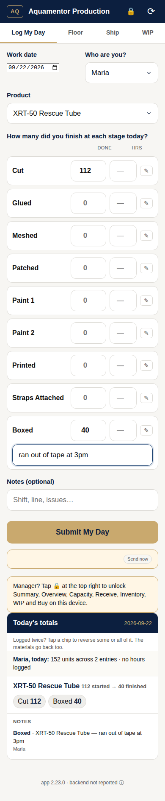
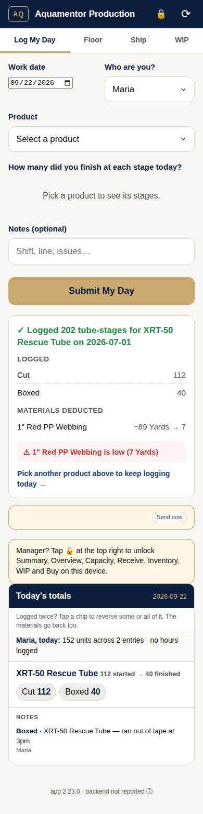
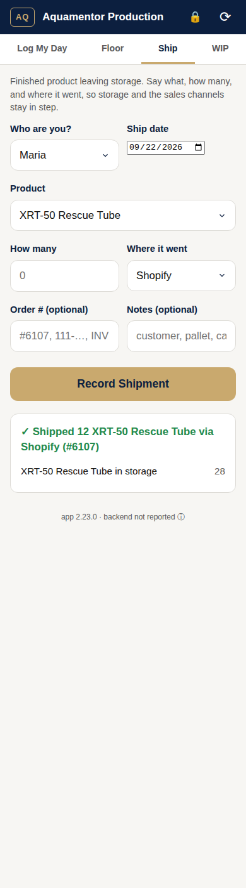
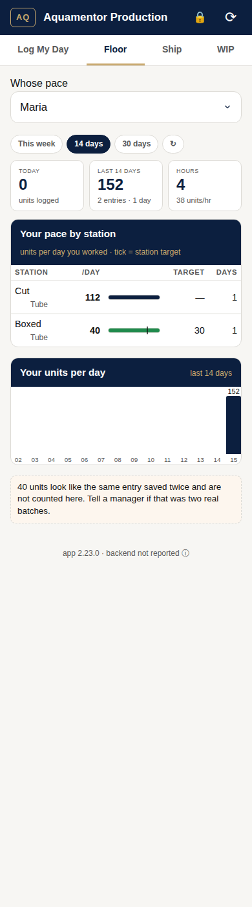
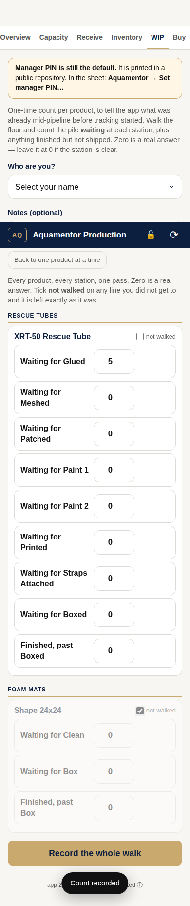

Three things, all on your phone: log what you finished, record what shipped, and see your own pace. Two minutes a day. Nothing to install.
Open the appThe app is a web page. Put it on your home screen once and it opens like any other app, and it keeps working when the shop Wi-Fi drops.
Open prod-through-inv-3.dan-daf.workers.dev in your phone's browser.
Safari on iPhone, Chrome on Android.
iPhone: tap the Share button, then Add to Home Screen.
Android: tap the ⋮ menu, then Add to Home screen.
Open it from the home screen from now on.
It updates itself. If it ever looks stale, close it and reopen it.
One entry per product you worked on, at the end of your shift or when you finish a batch. You log what you finished at each station today, not what you touched.

Check the date. It's today unless you change it.
Logging yesterday's work? Change the date first.
Pick your own name.
Your pace and hours come from this. Never log under someone else's name.
Pick the product.
Tubes: the size and Exo or Standard. Blanks are their own product: cutting and gluing goes under the blank, not the tube.
Type how many you finished at each station.
Leave a station at 0 if you didn't work it. Hours next to a count are optional but they make your rate real.
Tap the pencil ✎ on a station if something happened there.
"Dryer down 2 hours." "Ran out of tape." Short and specific. It lands on that station's row.
Tap Submit My Day and read the green box.
It lists what was logged and what materials came off the shelf. If it says "already logged today", read it: Cancel if you tapped twice, OK if this is a real second batch.

Logged something twice, or typed 40 when you meant 4? Scroll down to Today's totals and tap the chip for that station. It asks how many to take back and why. Type the number and a word or two. The materials go back on the shelf too. That's the only way to undo, so use it the moment you notice.
When finished product leaves storage, record it on the Ship tab. That's how the count in storage stays right and how the office knows which channel took it.


The Floor tab shows your own work and nobody else's. Pick your name. The tick on each bar is the station target. If you log hours, you also see units per hour. That's the number a rate is built from, so it's worth the extra tap.

Now and then a manager will ask for a floor count. On the WIP tab tap Walk the whole floor, then walk the shop and type what is actually sitting at each station for each product. Count what's there, not what should be there. Zero means "I looked, nothing there", so type it. Submit once at the end.
Only log what you did, under your name.
A tube counts at a station when it's done there and ready for the next one.
Cut, Glued, Meshed… each one gets its own number, even if the same units flow through them.
If the app says "already logged today", stop and read it.
Never with a negative number or a smaller entry tomorrow.
If it left storage, it's on the Ship tab, with the channel.
Questions or something that looks wrong: tell Alex or John. They can see the whole floor and fix entries.